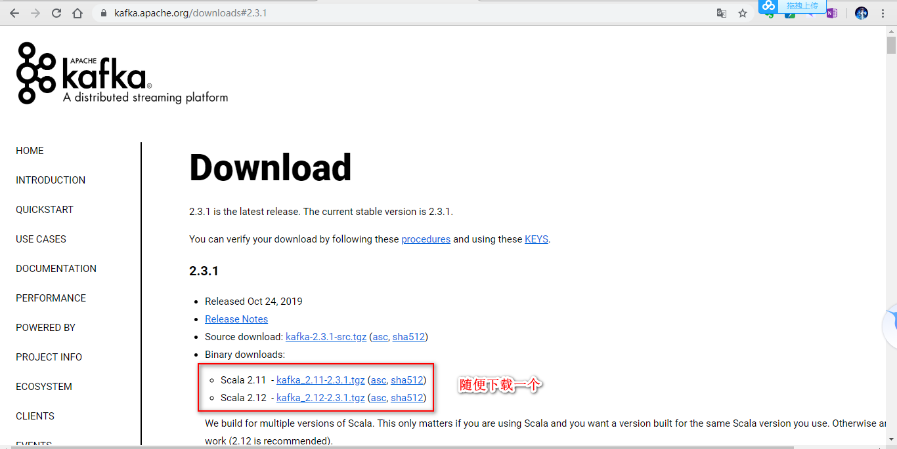
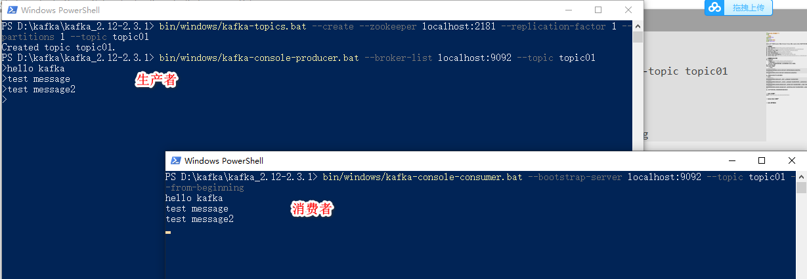
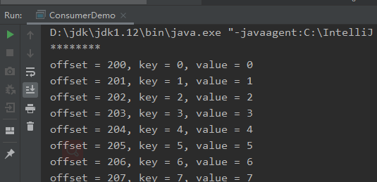
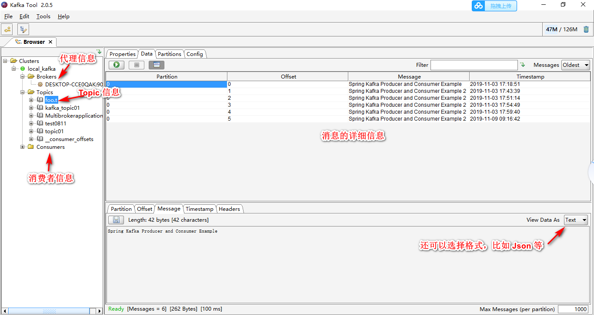

Kafka 学习笔记（一）
Kafka 是一个开源的 Apache 项目，用 Scala 和 Java 编写。 Apache Kafka 是基于发布订阅的容错消息系统。
学习资源
- Kafka 官方文档：http://kafka.apache.org/documentation/
- Kafka API：https://docs.spring.io/spring-kafka/docs/2.3.1.RELEASE/api/
- w3school Kafka 教程：https://www.w3cschool.cn/apache_kafka/
- 易百 Kafka 教程：https://www.yiibai.com/kafka
- Kafka 官方文档中文版：http://kafkadoc.beanmr.com/
- Spring Kafka 官方文档(PDF)：http://kafkadoc.beanmr.com/
- Spring Kafka API:https://docs.spring.io/spring-kafka/docs/2.3.1.RELEASE/api/
本地搭建 Kafka 服务
- 下载 Kafka
下载地址：https://kafka.apache.org/downloads#2.3.1

下载 tgz 文件解压到指定目录，以后该目录就是 Kafka 根目录。 启动 Kafka 服务
进入 Kafka 根目录1
先启动 zookeeper
bin/windows/zookeeper-server-start.bat config/zookeeper.properties
再启动 kafka
bin/windows/kafka-server-start.bat config/server.properties
- 在生产者发送消息，查看消费者是否能收到消息

Kafka 入门例子
生产者：
消费者：
分别运行生产者和消费者后，消费者成功接收到生产者发布的100条消息。

SpringBoot Kafka 入门例子
引入 Spring Kafka 依赖
123456789<dependency><groupId>org.springframework.kafka</groupId><artifactId>spring-kafka</artifactId></dependency><dependency><groupId>org.springframework.kafka</groupId><artifactId>spring-kafka-test</artifactId><scope>test</scope></dependency>配置基本参数信息
12345678910111213141516171819spring:kafka:# 配置服务地址bootstrap-servers: localhost:9092# 配置消费者consumer:group-id: fooauto-offset-reset: earliestkey-deserializer: org.apache.kafka.common.serialization.StringDeserializervalue-deserializer: org.apache.kafka.common.serialization.StringDeserializer# 配置生产者producer:key-serializer: org.apache.kafka.common.serialization.StringSerializervalue-serializer: org.apache.kafka.common.serialization.StringSerializer# 配置 topicapp:topic:foo: foo.t
更多配置可以参见：https://docs.spring.io/spring-boot/docs/current/reference/html/appendix-application-properties.html
打开后，所有 kafka 即可找到所有相关配置。
或者之间看 Spring Kafka 源码的自动配置类：KafkaAutoConfiguration
关键在于理解各个配置的作用和使用方法，需要慢慢积累和实践。
- 创建生产者1234567891011121314151617public class Sender{private static final Logger LOG = LoggerFactory.getLogger(Sender.class);private KafkaTemplate<String, String> kafkaTemplate;("${app.topic.foo}")private String topic;public void send(String message){LOG.info("sending message='{}' to topic='{}'", message, topic);kafkaTemplate.send(topic, message);}}
关键在于注入 kafkaTemplate 来发送消息。
- 创建消费者1234567891011121314151617import org.slf4j.Logger;import org.slf4j.LoggerFactory;import org.springframework.kafka.annotation.KafkaListener;import org.springframework.messaging.handler.annotation.Payload;import org.springframework.stereotype.Service;public class Receiver{private static final Logger LOG = LoggerFactory.getLogger(Receiver.class);(topics = "${app.topic.foo}")public void listen(@Payload String message){LOG.info("received message='{}'", message);}}
关键在于 @KafkaListener 和 @Payload 这两个注解。
- 创建启动类，启动测试1234567891011121314151617181920212223import com.monkeykong.learnkafka.producer.Sender;import org.springframework.beans.factory.annotation.Autowired;import org.springframework.boot.CommandLineRunner;import org.springframework.boot.SpringApplication;import org.springframework.boot.autoconfigure.SpringBootApplication;public class ProducerConsumerApplication implements CommandLineRunner{public static void main(String[] args){SpringApplication.run(ProducerConsumerApplication.class, args);}private Sender sender;public void run(String... strings) throws Exception{sender.send("Spring Kafka Producer and Consumer Example 2");}}
启动 demo 后，消费者成功接收到消息。
官方例子：https://github.com/spring-projects/spring-kafka/tree/master/samples
Kafka 客户端工具
发现一个 Kafka 图形化客户端。可以方便的看到 topic 和消息体等信息。
下载地址：http://www.kafkatool.com/download.html
